M
o
o
n
s
h
o
t
正
在
做
更
宏
大
的
事
，
大
多
数
人
却
视
而
不
见
！
谨
以
此
文
奉
献
给
D
w
a
r
k
e
s
h
P
a
t
e
l
。
他
一
直
在
与
嘉
宾
反
复
提
及
c
o
n
t
i
n
u
a
l
l
e
a
r
n
i
n
g
这
个
话
题
。
正
如
他
正
确
指
出
的
，
除
非
我
们
解
决
了
c
o
n
t
i
n
u
a
l
l
e
a
r
n
i
n
g
，
否
则
就
不
能
说
我
们
已
经
抵
达
A
G
I
。
c
o
n
t
i
n
u
a
l
l
e
a
r
n
i
n
g
存
在
许
多
机
制
。
有
些
涉
及
构
建
外
部
m
e
m
o
r
y
，
但
除
非
模
型
能
够
在
每
次
交
互
中
学
习
更
新
自
身
的
w
e
i
g
h
t
s
：
：
就
像
人
类
每
次
交
互
都
会
重
新
连
接
n
e
u
r
a
l
p
a
t
h
w
a
y
一
样
：
：
否
则
我
们
无
法
真
正
说
我
们
已
经
抵
达
A
G
I
。
Continual learning在我眼中同样也是AGI的圣杯。一个部署后无法学习的模型，会被冻结在其training cutoff：它每被使用一小时都不会产生持久的改进，每一次新的交互都从同样的空白状态开始。如果LLM能够从自身经验中积累world model，而无需一次重新训练运行，那将是相对于现有模型的一次巨大飞跃，并帮助我们抵达AGI。
开启这篇文章的观察是Kimi' K3的两个简单事实：无ROPE和固定状态。
1. 首先，无ROPE意味着事实上无限context（理论上）。
2. 在K3的93个attention层中，有69层（约75%）是KDA层，无论context多长，其全部memory是一个固定的每头128 × 128 state matrix。只有24层（25%）是Gated MLA层，其KV cache随context线性增长。K3的特殊之处在于，尽管有75% 的KDA或线性层，其性能仍接近前沿：它是第一个做到这一点的模型。换句话说，模型中四分之三的attention运行在固定大小、有损、压缩的memory（KDA）上，却没有牺牲太多能力；显然，每一层都精确的token级cache并不是前沿性能所必需的！
这里有一个熟悉的类比。人脑也是一个固定大小的容器，我们显然不会记住发生在我们身上的每一件事：我们保留重要的想法，舍弃其余的，而我们保留的与其说是记录，不如说是不断更新的world model。对于无法保留的细节，我们依赖外部媒体：电话簿就是一个经典例子。我们的智能主要存在于压缩的model中，而不是档案库中。KDA的工作方式与此相同：有界的容量、错误驱动的更新、衰减会保留被反复演练的内容、淡忘未被演练的内容，泛化而非逐字存储。
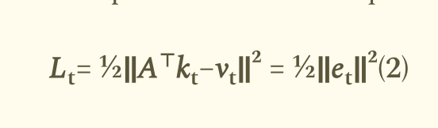
Yang Zhilin（Moonshot的CEO）的工作让我了解到，他并非轻率做出这些选择（例如KDA、无ROPE）！！！他本可以简单地沿用DeepSeek的MLA + DSA并扩展模型，但他没有。
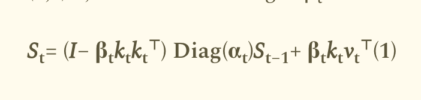
虽然KDA展示了一条通往continual learning的路径，我们将在后文详细探讨，但核心思想并非KDA独有：任何delta-rule linear attention都具有相同的结构和相同潜力。Linear transformers（Kimi K3是Hybrid Linear：我们很快就会看到更多细节）作为fast weight programmers的想法，由Imanol Schlag、Kazuki Irie和Jürgen Schmidhuber在他们的论文 *Linear Transformers Are Secretly Fast Weight Programmers*（2021）中明确提出，并建立在Schmidhuber 1992年的fast-weight思想之上。虽然这个想法可能看起来有些古老，但当时并未被认真对待，因为Linear Transformers本身也并非主流。Kimi的KDA所做的，是证明了你可以达到前沿性能，从而让这一思想如今成为主流。本文承接那篇2021年的观察，具体追问要把这一思想转变为能带我们抵达AGI的完整continual learning架构需要做些什么。
🔗 https://arxiv.org/abs/2102.11174
趣闻：你认出上面那篇论文提到的第三个人是谁了吗？没错！
下面深入探讨Kimi K3的一个重要方面：其KDA状态。它不仅仅是一个可缓存的状态，而是一组通过梯度下降在模型处理的每个token上训练的快速权重。使其持久化是迈向持续学习的可行路径。
我们按以下顺序讨论主题：机制、使更新成为学习规则的精确损失和梯度、没有RoPE为何有帮助、三个面向“真正”持续学习的设计提案，以及我看到的容量和系统限制。 目录
问题：已部署的模型不学习
Kimi K3简介
KDA状态的机制
更新是对损失的梯度下降
为什么此处缺少RoPE很重要
核心论点：状态是快速权重中的世界模型
面向持续学习的三个提议
我们是否应该拥有更大的状态？我们能拥有多大的状态？
总结
一个已部署的语言模型恰好有两个位置可以存放当前交互的信息。第一个是权重，在训练后冻结：它们编码了模型从训练语料中学到的一切，当你与模型对话时它们不会改变。第二个是上下文：prompt中的token历史，以及由它构建的逐层KV缓存。上下文是可写的：每个新token都会添加进去，模型可以回看其中的任何内容。但它是临时的。当会话结束时，缓存被丢弃，下一个会话从冻结的权重加上空无开始。
持续学习意味着弥合这两个存储之间的差距：模型应该保留它在部署期间学到的东西，跨越会话边界，而无需重新训练。基于用户数据进行微调是一种答案，但它是离线的、昂贵的，并且存在灾难性遗忘基础权重的风险。有趣的问题是，架构本身是否已经包含一种可写的、持久的记忆，它比原始的token历史更紧凑、更“类权重”。
Kimi K3的注意力设计恰好包含了这样一个对象：KDA状态。它是每个注意力头的固定大小矩阵，通过一个显式学习规则在每个token上更新：该规则在数学上等价于对每个token损失执行一次SGD步骤。
Kimi K3是一个2.8万亿参数的mixture-of-experts模型，每个token有104B活跃参数，93层，以及1M-token上下文窗口。其注意力是混合式：69层KDA (Kimi Delta Attention) 与24层Gated MLA按3:1的模式交错排列：Kimi Linear的消融实验发现该比例最优。MoE主干 (Stable LatentMoE，896个路由专家，每个token激活16个) 和跨深度Attention Residuals对K3很重要，但与本文的论点基本正交；下面的两张图仅供定位参考。
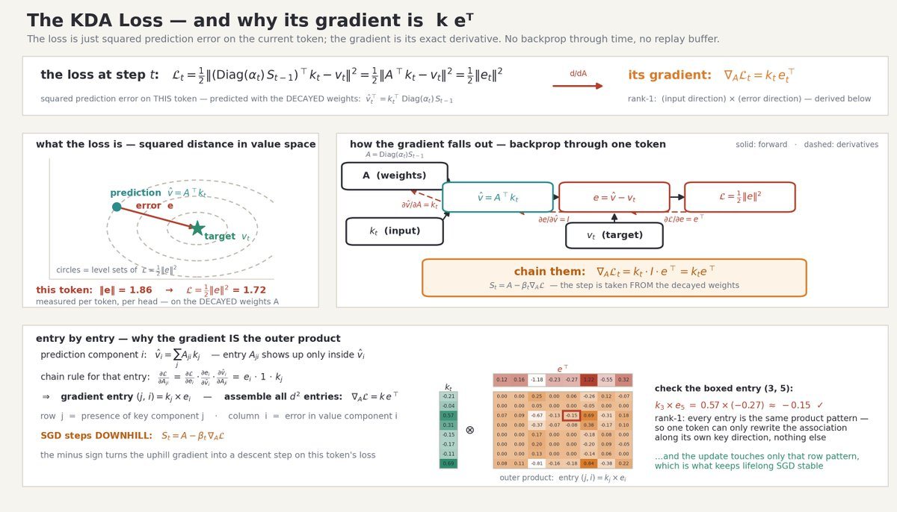
K3的前馈侧。路由专家在一个狭窄的潜在空间中运行，使得896个专家的稀疏性在2.8T参数下仍然可承受。这里存储着大部分冻结知识；这不是本文的主题，但它为 §8设定了规模对比：可写入的KDA状态比冻结权重小约四个数量级。
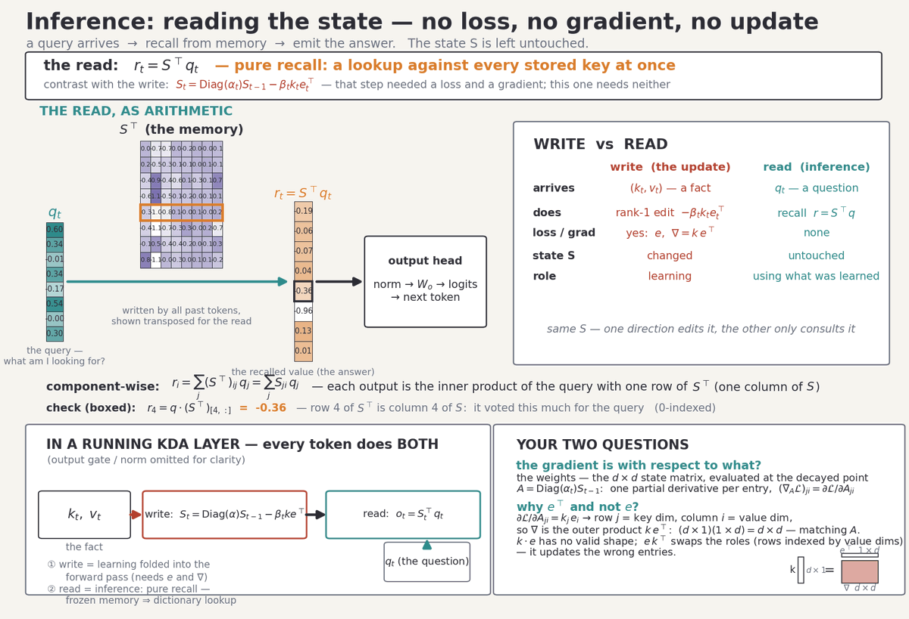
Attention Residuals。每一层从早期层输出的存储库中检索，使用学习到的softmax权重，而不是普通的残差流以权重1累积每一层。AttnRes跨深度移动信息；KDA跨时间移动信息。持续学习关乎时间轴，因此从这里起KDA是重点。
这两种注意力类型维护的运行时内存截然不同。每个Gated MLA层维护一个标准的KV缓存 (潜在形式)，每个token按固定量增长。每个KDA层维护每头的固定大小状态矩阵：dk × dv = 128 × 128：无论序列有多长。每请求的总体内存情况：
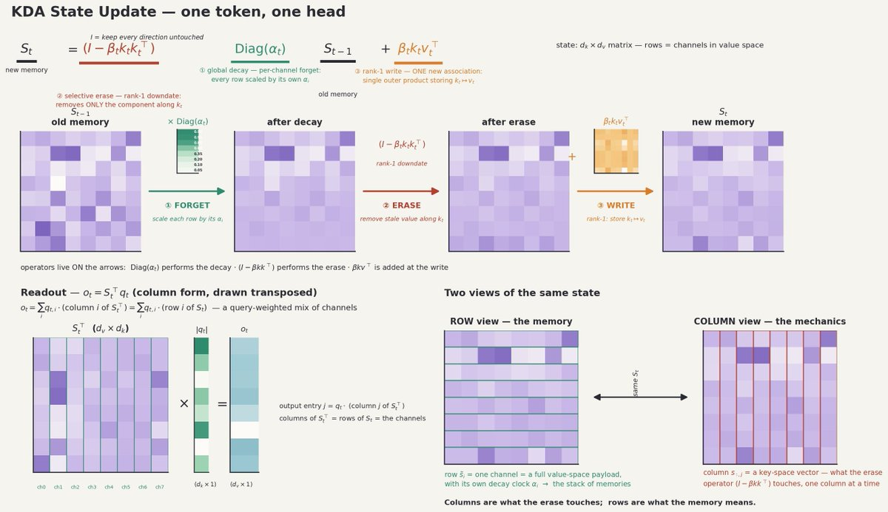
每请求内存。相同深度的全MLA模型每个token需要107 KB缓存；K3的24个MLA层需要27.6 KB/token，外加固定的0.22 GB KDA状态 (69层 × 96头 × 128 × 128 × 2字节 ≈ 217 MB)，与上下文长度无关。此图中的两个事实驱动了下面的一切：KDA状态是固定大小的，而且它很小。
因此，K3已经将其运行时内存划分为增长部分（MLA缓存）和恒定部分（KDA状态）。后续提出的方案本质上是将这一划分也赋予语义：会话特定细节存放在增长部分，长期学到的结构存放在恒定部分：并将恒定部分跨会话携带。
每个KDA head维护一个状态矩阵St ∈ ℝdk×dv。对于每个到来的token，该head从其投影中产生四个向量：键kt、值vt、逐通道衰减 αt ∈ (0,1)dk，以及写入强度 βt。随后状态按如下方式推进：
从右向左解读（1）式，每个token发生三件事：
🔗 https://github.com/MoonshotAI/Kimi-Linear
一个token，一个head。① 遗忘：Diag(αt) 用各自的衰减系数缩放旧状态的每一行（通道）：这是一种逐通道时钟，比早期delta nets的标量门控更精细。② 擦除：秩一降更新 (I − βtktkt⊤) 仅移除内存中沿新键方向的分量：其他键的关联不受影响。③ 写入：一个秩一外积存储新的关联kt ↦ vt。底部面板展示了读出以及同一矩阵的两种有用视图：行是内存通道，列是擦除操作触及的部分。
从状态中读出是一个矩阵–向量乘积。查询向量qt产生输出ot = St⊤qt：状态行的查询加权混合。同一操作写成行向量形式ot⊤ = qt⊤St，这正是chunkwise kernel一次对多个token的计算方式：
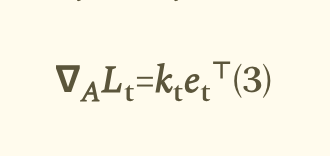
两种方式写出相同的读出。列形式（探针视图）：每个输出条目是qt与St某一列的点积。行形式（记忆堆栈视图）：qt的每个坐标缩放一行，然后将各行求和。数值完全相同：已验证为精确相等。
读出是推理时网络其余部分所消费的内容。下图展示了完整的读取路径，并将其与写入路径进行对比：
🔗 https://openlm.ai/kimi-k3/
以下所有内容都取决于两个性质。
首先，状态大小固定：无论模型见过一百个token还是一百万个，每个头的记忆都是同一个128 × 128矩阵：所有过往经验都被有损地压缩其中。
其次，更新在时间上是局部的：St仅依赖于St−1和当前token的向量。没有回放缓冲区，没有对历史的注意力，没有第二次遍历。这些正是在线学习系统的性质，下一节将表明这不是类比，而是完全等同。
本节技术性很强，你可以直接跳到本节最后的图查看结果。
定义衰减权重A = Diag(αt)St−1：即遗忘步骤之后、新token写入之前的状态。在写入之前，头使用这些权重从当前token的key预测其value：v̂ = A⊤kt。预测误差为et = v̂ − vt。现在用衰减权重上的平方损失对该预测进行评分：
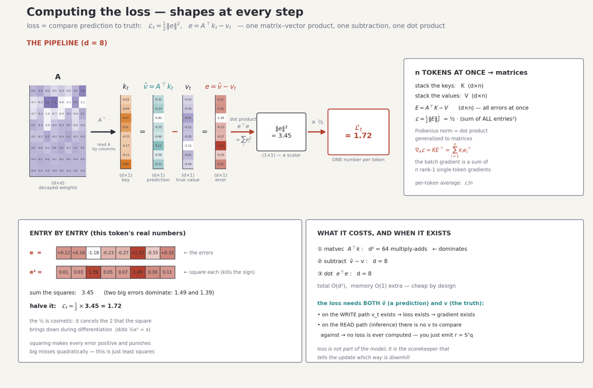
对 (2) 关于矩阵A求导，得到秩为1的梯度（下面逐元素推导）：
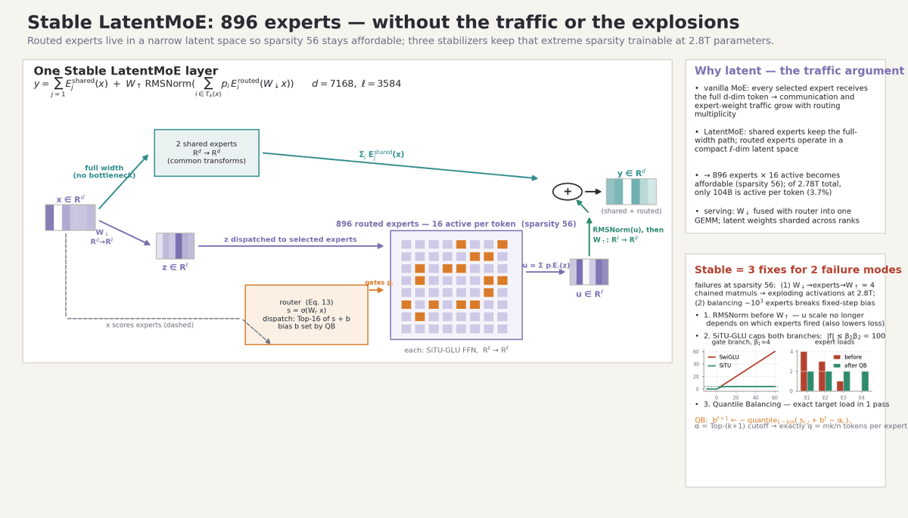
而从衰减权重出发的一次SGD更新St = A − βt∇ALt正是更新公式 (1)：擦除项是梯度步骤中沿kt移除陈旧预测的部分，写入项是安装修正值的部分。
KDA递推是在线梯度下降：具体而言是经典delta规则（Widrow–Hoff LMS，1960）加上逐通道权重衰减正则化器：在推理时对模型自身激活逐token运行。下图逐项拆解该论断。
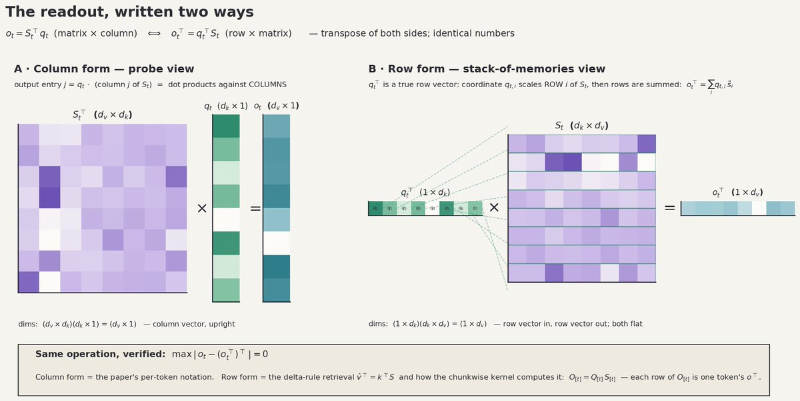
学习视角。顶部横幅：损失基于衰减权重A = Diag(αt)St−1计算，其梯度为外积ktet⊤：注意算子位置，A⊤ 作用于key以产生预测。主面板：单个token的更新以数值方式计算：衰减、预测、比较、修正：四个量以热力图显示。
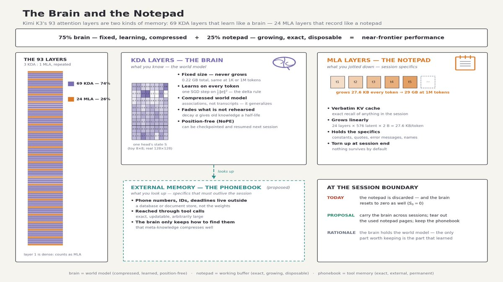
为何梯度是外积。左：损失是值空间中预测与目标之间的平方距离。右：通过单个token的反向传播：∂L/∂e = e⊤，∂e/∂v̂ = I，∂v̂/∂A涉及kt：链式得到ktet⊤。底部，逐条目：梯度条目 (j, i) = kj × ei，经数值验证。实际后果：单个token只能沿自身key方向重写关联：稀疏信用分配，这正是终身SGD保持稳定的原因。
损失涉及矩阵和向量，但本身是标量：它只是逐条目误差的平方和；批量版本将向量误差替换为误差矩阵，将范数替换为Frobenius范数：
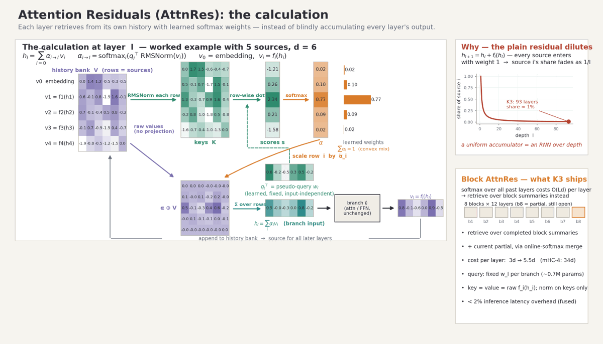
逐形状看损失。顶部：从A经k、v̂、v到标量L的单token流水线。中部：批量形式：K、V、E = A⊤K − V，L = ½‖E‖²F，∇AL = KE⊤ = Σi kiei⊤，即一组秩1项之和。底部：逐条目计算与O(d²) 开销。
标量对矩阵求导是逐条目定义的：梯度是偏导数矩阵，等价地，是在Frobenius内积下满足dL = ⟨G, dA⟩F的唯一矩阵G。两种视角，以及对玩具状态全部64个条目的有限差分校验：
标量损失，矩阵自变量。左：扰动单个条目A2,4并测量损失变化，可重现解析梯度条目k2e4，精确到11位小数。右：形式化视角：梯度由Frobenius配对dL = ⟨G, dA⟩F定义；全部64个条目均通过验证，最大误差1.9e-11。
为完整起见，从损失方程到ktet⊤ 的完整推导，经由两条独立路径：使用Kronecker delta的指标运算，以及使用迹技巧的矩阵微分：
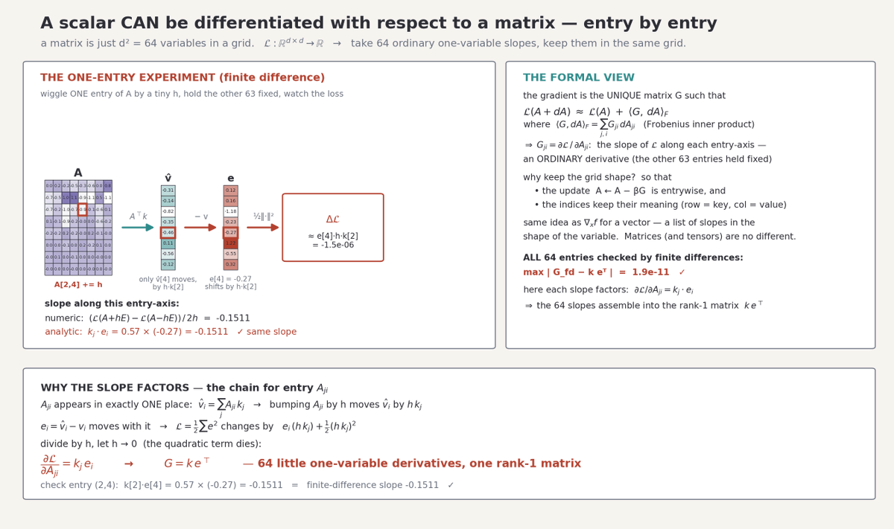
两种推导。路线1（指标计算）：将L写成分量形式，把eℓ 对Aji求导（克罗内克 δℓi选择每个权重项馈入的误差分量），应用链式法则，求和式坍缩为kjei。路线2（微分）：dL = e⊤de，代入de = (dA)⊤k，循环迹，从Frobenius配对读出G。两条路线都得到同一更新方程。
最后：为什么选这个损失而不是其他？因为任何逐项惩罚 ρ(e) 产生的梯度都具有相同的秩一形式k ψ(e)⊤，其中 ψ = ρ′：而二次损失是唯一导数为恒等映射的选择，使更新关于误差呈线性，正是delta规则：
🔗 https://arxiv.org/abs/2510.26692
为什么是 ½e⊤e。左侧：候选惩罚（二次、L1、四次、Huber）及其导数。右侧：主公式 ∇AL = k ψ(e)⊤：只有 ψ(e) = e才给出线性更新；二次损失也是高斯最大似然对应的选择，且 β = 1时单步恰好拟合当前样本。平方损失使KDA成为简洁的在线最小二乘学习器。
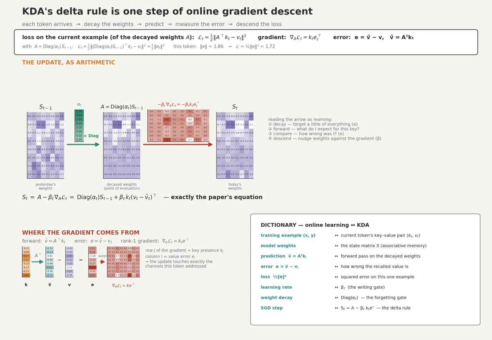
整个循环一页讲清。一次迭代 = 一个token = 对记忆的一次LMS步：衰减（正则化）、前向传播（预测）、比较（误差）、梯度（秩一）、权重更新、缓存状态、前进。O(d²) 状态，每token的O(1) 工作量，无重放，无增长缓存。终点ST是训练好的联想记忆：本文所讨论的对象。
K3的注意力层不使用旋转位置编码。在Kimi Linear设计中这是有意为之：MLA层采用NoPE，位置/新近信息完全由KDA层的数据相关衰减门承载：消融实验发现NoPE配合KDA优于RoPE，而RoPE的基频敏感性是上下文扩展中已知的复杂因素。这对持续学习有一个具体影响。
基于RoPE的记忆会将位置信息编码进每个缓存的key中：会话1中位置50,000处学到的事实，会以旋转50,000步的形式存储。在会话2中恢复这样的缓存，要么继续位置计数器（位置持续上移，进入模型可能外推不佳的区域），要么重置计数器（每个缓存的key都会发生错旋）。KDA状态没有这种耦合问题。(1) 中的近因性通过关联存活的衰减步数来体现，而非其发生的位置。一百万token前写入且从未刷新的关联，只是沿路的 α 乘积使其淡化：无论这些token是在一个会话中还是十个会话中，淡化程度都相同。因此，该状态是一种与位置无关的检查点：可以在一个会话结束时保存，在另一个会话开始时加载，无需重新索引、无需计数器记账、也没有旋转不一致的问题。无论该状态在其他方面有何局限（§8），位置处理都不在其列：这为下面的提案提供了一个偶然但真实的基础。
第3–5节确立了机制。现在我们要提出论点。
K3的冻结权重是通常意义上的世界模型：训练语料的压缩统计量，经过数月计算的梯度下降蒸馏而成。KDA状态是同类对象，只是尺度和速度不同。它是一组快权重：这些矩阵并非离线训练，而是由前向传播本身训练，每个token一步SGD，基于模型自身激活上定义的预测损失。在一个会话中，69层所有head的状态矩阵累积出该会话世界的压缩关联模型：读过的文档、讨论过的实体、用户给出的修正、任务的结构。
有三个属性使其看起来像是持续学习的基础设施，而非单纯的缓存：
• 它通过梯度下降学习。更新不是记账（追加、淘汰），而是误差驱动。状态在损失上下降，这正是模型中其他所有地方“学习”的含义。
• 它通过构造来泛化。状态不存储token，而是存储表示空间中的方向。一个探针key与已写入的key相似：而非相同：就能检索到相似的值，因为记忆是线性算子，而不是查找表。这就是世界模型与逐字记录之间的区别。
• 它是有界且与位置无关的。固定大小意味着携带它的成本不会增长；NoPE意味着跨会话携带它有明确的定义（§5）。
当前方案与连续学习之间有一个明显差距：目前状态在会话结束时会被丢弃。虽然状态在会话内的多次交互中得以保持，但在新会话的第一个token/交互处，每个KDA头都从S0 = 0开始，从头重新学习世界。累积的机制已经存在，但持久化却缺失。下一节将讨论如何弥合这一差距。
Kimi K3：KDA（75%层）是大脑，MLA层（25%层）是记事本。我们还需要规模几乎无限的外部存储。
提案1：状态交接实验
跨会话保留KDA状态，同时丢弃MLA KV缓存，并测量哪些内容得以保留。当前的服务配置将两者都重置：对于新会话，我们从零状态和空MLA KV缓存开始。该实验仅做一处修改：在会话边界，检查点保存所有69（层）× 96（头）个状态矩阵（目前总计约0.22 GB，后文提议至少增加10倍），完全丢弃MLA缓存，并从检查点而不是从零初始化下一个会话。
构建会话1，教给模型一些它无法从预训练中学到的内容：一个合成项目的约定、一个新代码库的布局、用户的偏好、具有定义属性的虚构实体。然后在会话2中，用第一个会话的KDA状态初始化，但不带MLA KV缓存（25%的层），也没有重复上下文，探测：模型是否表现得好像知道这些内容？它很可能从KDA状态中记住一些细节。然而，在深度学习中，只要我们有任务数据集并知道如何计算损失，我们总能训练模型学会我们想要的东西。因此，我们需要创建使用过去会话KDA状态的任务，以及不重复可能已在该KDA状态中的知识的提示词。
另一个方向是完全消除MLA，因为它使此类适配变得复杂。模型可以仅拥有大型KDA状态，这些状态遍布100%的层（更多讨论见8.2节），并配备一个从过去上下文中检索特定细节的工具。
提案2 ： 按角色解耦两种记忆
KDA状态：理想情况下：应保存世界模型；MLA KV缓存应保存具体信息。目前这两种存储仅通过机制（压缩vs. 精确）来区分。能否明确地鼓励它们聚焦于不同的事物？下面这些语句表示说话者执行了一次乘法运算。它们之间的唯一区别在于具体数值。当模型处理此类提示时，KDA状态应相对相同，而MLA状态可以非常不同。
1. “I multiplied 5 and 4” 2.”I multiplied 20 and 3” 可以通过为模型提供适当的训练信号来实现这一点。你可以设计一个loss，如果在这种情况下KDA状态差异过大，则对模型进行惩罚。基本上，我们希望尽可能解耦KDA状态和MLA状态所提供的表示。
然而，这引出了一个哲学问题：什么是知识，什么是信息！例如，一个项目的惯例是知识还是信息？因此，我认为，用更大的KDA状态将MLA完全从模型中消除可能是可行之路。
提案3 ： 超过会话生命周期的具体信息应进入外部记忆
MLA缓存仍然线性增长，在无限持续学习的时间范围内，它也会变得过大。在24个Gated MLA层上，K3每token需要27.6 KB，一个永不结束的会话在1M token时达到29 GB：而持续学习意味着没有可供丢弃的“会话结束”点。然而，我们无法存储无限长的KV MLA。
解决方案是将提案2更进一步用于长期存在的具体信息：电话号码、账户ID、截止日期：这些应存放在外部存储（数据库、键值记忆、文档存储）中，并通过工具调用取回。模型的工作不是记住电话号码，而是记住存在一个电话号码、它存储在哪里以及如何查询它。这种元知识：自身外部记忆的schema：正是KDA状态能够高效保存的那种压缩的关系型事实。
这种划分变为三层：1) 冻结权重用于通用知识，2) KDA状态用于学习到的世界模型，3) 外部记忆用于任意规模下的任意具体信息，而MLA缓存则被压缩为当前会话的真正的临时工作缓冲区（或在设计本身中完全消除）。
8.1状态很小：这限制了它能容纳的思维
K3在推理时的全部可写、可学习记忆约为0.22 GB（69 [layers] × 96 [heads] × 128 [dk] × 128 [dv] × 2 bytes）。比较：冻结权重有2.8T参数，在MXFP4下约为1.4 TB：高出四个数量级。模型每次交互能学到的一切，以及超出上下文窗口后它用来“思考”的一切，都必须装进这0.22 GB。这是 §6世界模型的硬性上限，并从三个方面产生影响：
• 干扰。当两个经验在表示空间中共享关键方向时，第二次写入会部分覆盖第一次。每个头的d² 条目有限，意味着在长周期上碰撞不可避免。
• 衰减。状态大致可以看成是一叠记忆。每个通道（状态中的一行）在每一步都乘以其通道的 α。从未被复述的知识寿命更短，因为状态设计上偏向近期知识。我们需要一个真正长周期的世界模型。训练期间，模型通过控制 α 来学习记忆/遗忘。所以必须有“极长上下文学习”训练，教会它更长时间地记住。
• 压缩损失。0.22 GB装不下长期协作的具体细节：这正是提案2和提案3把具体细节放到别处的原因。但这也限制了状态在较新结构挤出较旧结构之前能携带多少关系结构。
8.2这个规模的模型负担得起更大的状态：代价是什么？
dk = dv = 128是出于效率的设计选择。2.8T参数模型或许能承担更大的状态：更宽的head维度、更多的head，或更高的KDA:MLA比例。假设状态放大一个数量级，达到约2.2 GB。按确定性排序，有三个后果：
• 前向传播流量。解码受内存带宽限制，状态在每个KDA层的每个token上被读取（o = S⊤q）和写入（rank-1更新）。当前状态流量为每个token 2 × 0.22 GB ≈ 0.43 GB，相对于104B激活参数对应的 ~50+ GB权重读取来说很小。状态放大10倍后，状态流量变为每个token ~4.3 GB：仍是二阶效应，但不再可忽略；它线性增长，而权重流量保持不变（此例中保持激活参数恒定）。例如，在内存带宽约为2 TB/s的设备上，仅内存读写就会使每个输出token的时间增加约2 ms：直接增加每个生成token的延迟。不过还不算太糟……
• 计算量。每个token的更新是每个head的O(dk·dv) 计算量：目前很便宜，但随head维度呈平方增长。将dk、dv翻倍会使状态大小和更新FLOPs都变为四倍。Prefill内核（chun-kwise、DPLR形式）也按同样方式扩展，因此每个token的prefill成本也会上升。但至少在解码阶段，FLOPs无论如何都不是大问题。
• 服务资源。持久化的每用户状态将状态从可以丢弃的小对象变成必须谨慎保留数月的大对象：当前每用户0.22 GB，10倍后为2.2 GB，再乘以并发用户数；每个请求都需要checkpoint/restore，并且承担KV cache所没有的隐私/隔离要求，因为KV cache是一次性的（你完全可以想象用户起诉你要求拿回他们的KDA状态 :)！）
话虽如此，迄今为止我们讨论的所有内容，对于当今的加速器、HBM和网络技术来说都不困难：模型权重存储固定的常识，状态存储可学习知识（每用户），而状态字节目前仅为预算的1/6000。即使状态扩大10–50倍，相对于1.4 TB权重（MFPP4）也只是舍入误差。
真正的问题是，训练动态（衰减调度、β、3:1比例）在这种容量下是否依然表现如常：这是一个经验问题，而非算术问题。
8.3其他未决风险
• 未经证实的累积。状态是在单一上下文内训练的。没有Proposal-1实验的情况下，经过数周延续会话累积的状态是否仍保持良态：还是通过AttnRes路径发生漂移、饱和或放大误差：尚不可知。
• 对陈旧知识没有防护。冻结权重至少受益于训练时的数据筛选；而携带的状态会从用户所说的任何内容中学习，包括错误信息，没有验证环节。
• 评估问题尚未解决。持续学习基准测试衡量事实保留能力；而衡量所携带世界模型的质量：更好的先验、对用户环境的更准确校准：需要新的评估方法，而不仅仅是召回测试。
Kimi K3的KDA层为每个注意力头维护一个固定大小的状态矩阵，每个token通过一条规则更新，该规则本质上是基于模型自身激活的平方预测损失上的一次SGD步骤：损失 ½‖e‖²，梯度k e⊤，从衰减后的权重出发进行更新。
因此该状态是一个快权重世界模型：压缩、联想、可泛化，并且由于架构不使用RoPE，它与绝对位置无关，因此可以跨会话检查点保存并恢复而不会产生不一致。缺失的是持久性：当前状态在每次会话边界都会重置为零。
通往持续学习的路径是：(1) 进行交接实验：携带状态，丢弃MLA缓存，衡量哪些信息得以存活；(2) 解耦两种记忆：KDA状态中的世界模型，MLA缓存中的会话细节；也可以尝试完全去掉MLA；(3) 将长期存活的细节转移到通过工具访问的外部记忆中，因为MLA缓存会在无限时间范围内无界增长。 主要限制在于容量：0.22 GB的状态相对于1.4 TB的冻结权重，限制了模型能够思考和记忆的内容量，干扰和衰减是潜在的失败模式。 我认为，K3这个规模的模型能够承载更大的状态；代价是每token内存流量（延迟）线性增长，每头维度的更新计算量二次增长（但解码不受计算限制），以及服务栈中需要新增持久化存储层。学习动态能否随容量扩展，这是一个开放问题。 提醒各位：我认识杨植麟（Moonshot CEO）的工作，他绝不会轻率地做出这些选择（如KDA、不用RoPE）！！！他本可以简单地沿用DeepSeek的MLA + DSA并扩大模型规模，但他没有。他们研究这种架构已经很长时间了，其中必有原因……
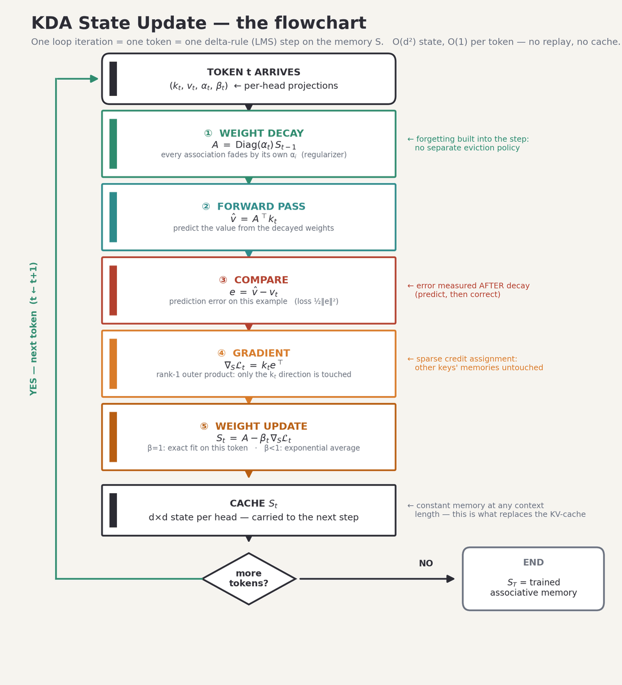
Schlag, I., Irie, K., Schmidhuber, J., Linear Transformers Are Secretly Fast Weight Programmers (ICML 2021) ： 线性注意力作为快权重程序员，delta规则作为状态的学习规则：arXiv:2102.11174。快权重思想本身：Schmidhuber, J., Learning to Control Fast-Weight Memories: An Alternative to Dynamic Recurrent Networks (Neural Computation, 1992)。
Moonshot AI ： Kimi K3模型发布及架构摘要（2.8T参数，104B激活，69个KDA层 + 24个Gated MLA层，1M上下文）：openlm.ai/kimi-k3
Kim等人，Kimi Linear：一种表达力强、高效的注意力架构 ： KDA更新规则、衰减状态上的SGD视角、NoPE消融实验、3:1混合比例、75% KV缓存缩减：arXiv:2510.26692 · 代码：github.com/MoonshotAI/Kimi-Linear
vLLM ： 生产级Kimi K3支持预览（KDA感知前缀缓存、融合解码内核、服务影响）：vllm.ai/blog/2026-07-22-kimi-k3-preview
本文所有图表均使用matplotlib并借助K3生成；机制图中的示例数据来自一个小型玩具实例（d = 8，固定随机种子）。
我也在Substack上写作，欢迎关注： https://polymath707.substack.com/publish/post/209176892
参考：https://x.com/bookwormengr/status/2085954914115834304